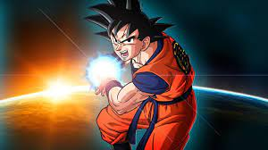
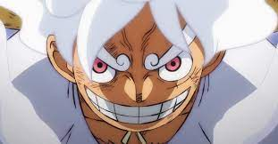
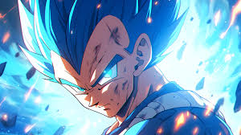
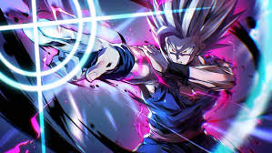

Originally named Kakarrot' he was the son of Bardock, a low-class Saiyan warrior; and Gine, born on Planet Vegeta in or around Age 737. Sensing the impeding danger to the Saiyan race from Frieza, his parents secretly sent him off to earth when he was only three years old.
Luffy was born 19 years ago in Foosha Village to Monkey D. Dragon and an unknown woman. Dragon left Luffy in the care of his grandfather, Monkey D. Garp, who did many dangerous things to Luffy to make him stronger, like throwing him down a deep ravine, leaving him alone in the wild, and tying him to a balloon.
Vegeta is a determined fighter who undergoes hard training, pushing past his limits to achieve results, to this end is the reason he desires to surpass Goku.Vegeta has already realized that the key to getting stronger lies elsewhere, and he has spent time meditating and improving his relaxation and control over his power.
As a child, Gohan was a shy, studious, intellectual child who lacked a Saiyan's raw fighting spirit, so he had to utilize his incredible half-breed Saiyan potential and emotional reserves to protect those he loves. As an adult, he achieves his dream career of becoming a great scholar.
